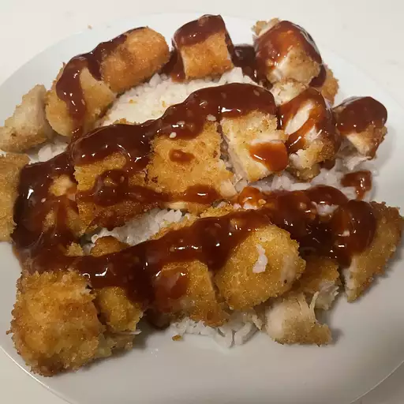

Chicken Katsu

Description
Chicken katsu is Japanese-style fried chicken, which can also
be used to make tonkatsu by using pork cutlets instead of
chicken. Serve with white rice and tonkatsu sauce.
Ingredients
- 4 skinless, bonless chicken breast halves - pounded to 1/2
inch thickness
- salt and pepper to taste
- 2 tablespoons all-purpose flour
- 1 egg, beaten
- 1 cup panko bread crumbs
- 1 cup oil for frying, or as needed
Cooking Instructions
- Season chicken breasts on both sides with salt and pepper.
Place flour, beaten egg, and panko crumbs into seperate
shallow dishes. Coat chicken breasts in flour, shaking
off any excess; dip into egg, and then press into panko
crumbs until well coated on both sides.
- Heat oil in a large skillet over medium-high heat. Place
chicken in the hot oil, and fry until golden brown, 3 or 4
minutes per side. Transfer to a paper towel-lined plate
to drain.